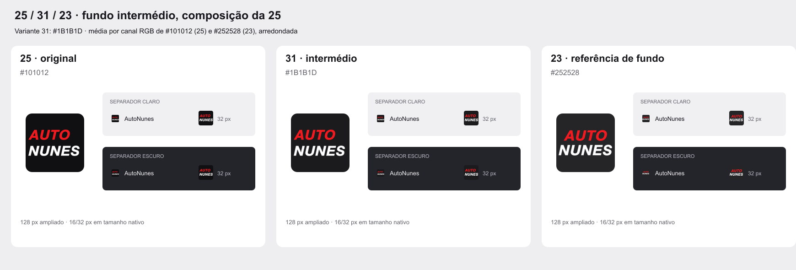
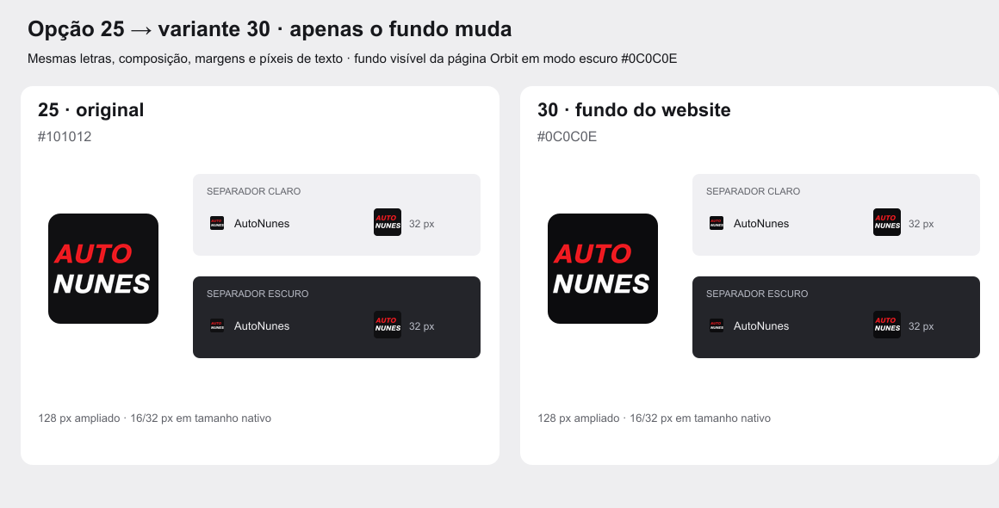

Favicons AutoNunes · composição revistaFavicon escolhido · variante 31
Abrir a comparação 25 / 31 / 23 e os ficheiros. Fundo intermédio #1B1B1D com a composição 25. Aplicado ao website público como ícone fixo. PNG 16/32/48/64/128/180/192/256/512, ICO e master SVG com raster original incorporado. CRM mantém o seu desenho.

Variante 30 · fundo visível da página
Abrir a comparação 25 / 30 e os ficheiros. Só muda o fundo de 25 para #0C0C0E, a cor visível do conteúdo Orbit em modo escuro, confirmada no navegador como rgb(12,12,14). As opções 25 e 29 ficam preservadas.
